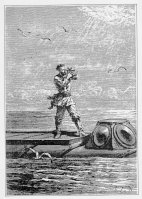
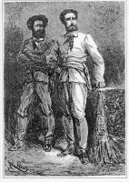
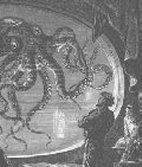

Nemo
El
capità Nemo és potser el personatge de Verne més emblemàtic
i més conegut. Apareix a "Vint mil llegües de viatge submarí"
i a "L'illa misteriosa". En la primera d'aquestes obres Verne ens
el caracteritza com un home d'edat imprecisa, entre 35 i 50 anys; en la segona
com un ancià de 70 anys. Nemo és un enginyer i savi pluridisciplinar
amb gran afecció per la música i les arts. Verne ens el descriu
com un home cepat i atlètic, amb un front ample, ulls negres plens de
seguretat, nas dret, boca ben dibuixada amb dents magnífiques, mans fines
i allargassades. en el que tota la seva persona emana una gran vitalitat.
De la seva fisonomia es dedueixen les seves qualitats dominants: la confiança
en ell mateix, la sobrietat, la franquesa, l'energia i la valentia. Nemo posseeix
un sentit artístic particularment desenvolupat, però si alguna
vegada es deixa arrossegar pels sentiments i ho fa aparent, de seguida sap reprimir-se
i retornar a l'estat de fredor habitual en ell. En realitat, però, aquesta
fredor no és res més que un escut per amagar la seva humanitat
i la seva enorme sensibilitat: el veurem plorar desconsoladament la mort d'un
dels seus homes. El seu odi envers els anglesos el fa canviar completament,
fent-lo perdre les qualitats esmentades per caure en atacs de còlera
que el condueixen a estats gaire bé d'enagenació. Amb tot, a "L'illa
misteriosa" se'ns presenta com un ancià bondadós, malalt
i solitari. Ara Nemo sembla haver abandonat qualsevol sentiment d'odi o rancúnia.
Però quin enigma s'amaga darrera de la figura del capità Nemo?
En realitat el nostre personatge és el príncep Dakkar, fill d'un
rajà de Bundelkund (l'Índia), va ser enviat a Europa a 10 anys
per rebre una educació completa. Hi va seguir estudis científics,
artístics i literaris. Va retornar a l'Índia el 1849 on es va
casar i va tenir dos fills. En no suporta el jou de l'invasor anglès
va començar a conspirar per deslliurar el seu país d'aquest domini.
El 1857 va donar suport a la revolta dels cipais. El seu coratge i capacitat
de líder van fer que els anglesos posessin preu al seu cap. Els invasors
incapaços de capturar-lo van massacrar tota la seva família. Una
vegada sufocada la revolta, Nemo va fugir de l'Índia i va desaparèixer
seguit per un grapat dels seus homes.
Refugiat en una
illa deserta del Pacífic va construir secretament una nau submarina:
el Nautilus esdevenint el capità Nemo. Amb aquesta nau recorre tots els
oceans cercant els tresors amagats procedents dels naufragis de tots els temps.
D'aquesta manera Nemo aconsegueix acumular una fortuna colossal. Una part d'aquesta
riquesa la destinarà a ajudar a tots els pobles oprimits del món.
El 1866 la seva vida canvia quan recull tres homes que han caigut al mar des
d'un vaixell americà que perseguia el Nautilus. Un d'aquests homes és
el professor Aronnax, un ictiòleg francès de gran anomenada. El
capità fa amistat amb aquest científic i emprenen un llarg viatge
submarí que ens mostrarà les belleses i els misteris dels fons
marins. Quan una fragata anglesa assetja el Nautilus i Nemo no dubta en enfonsar-la,
Aronnax horroritzat s'enfronta al capità i decideix d'evadir-se amb els
seus companys.
Nemo continuarà el seu periple erràtic fins que en anar morint
els seus mariners i quedar-se sol decideix atracar el Nautilus en un port segur:
una caverna submarina situada a l'illa Lincoln. L'atzar voldrà que un
globus amb cinc americans caigui en aquesta illa. Després de salvar d'incògnit
Cyrus Smith, el cap dels nàufrags, es dedica a observar com aquests s'esforcen
a sobreviure a l'illa. Durant quatre anys els ajudarà tan materialment
com lluitant contra els perills als que s'enfronten. Mai, però, desvetllarà
la seva presència.
Només quan Nemo se sent proper a la seva fi fa que els seus protegits
aconsegueixin arribar al Nautilus i trobar-lo. Llavors els explica qui és
i tot el que en els darrers anys ha fet per ajudar-los. Obsequia els nàufrags
amb un tresor de pedres precioses i els demana que quan mori el deixin dins
la seva nau. Respectuosos amb la darrera voluntat del capità els colons
de l'illa Lincoln faran que el Nautilus esdevingui la tomba submarina de Nemo.
La creació
del personatge de Nemo va comportar alguna tibantor entre Verne i el seu editor
Hetzel. En un principi, Nemo havia de tenir una altra nacionalitat. Havia de
ser un comte polonès revoltat contra el domini rus del seu país
que en perdre tota la seva família massacrada pels ocupants, decideix
venjar-se'n enfonsant les naus del tsar amb el seu submarí. Hetzel insistí
per tal que l'escriptor canviés la nacionalitat de Nemo. Tenia por que
el llibre fos prohibit a França per qüestions diplomàtiques
o que no s'autoritzés la venda a Rússia. Finalment, Verne decidí
guardar silenci sobre la nacionalitat i el ressentiment de Nemo, almenys en
Vint mil llegües de viatge submarí. A L'illa misteriosa es desvetllen
els misteris de Nemo i se'ns anuncia que és un príncep indú
que odia els anglesos pel jou al que sotmeten el seu país i per haver
mort tota la seva família.